AudioLDM: Text-to-Audio Generation with
Latent Diffusion Models
Haohe Liu*1, Zehua Chen*2, Yi Yuan1, Xinhao Mei1, Xubo Liu1
Danilo Mandic2, Wenwu Wang1, Mark D. Plumley1
1CVSSP, University of Surrey, Guildford, UK
2Department of EEE, Imperial College London, London, UK
*Equal Contribution
Abstract
Text-to-audio (TTA) system has recently gained attention for its ability to synthesize general audio based on text descriptions. However, previous studies in TTA have limited generation quality with high computational costs. In this study, we propose AudioLDM, a TTA system that is built on a latent space to learn the continuous audio representations from contrastive language-audio pretraining (CLAP) latents. The pretrained CLAP models enable us to train latent diffusion models (LDMs) with audio embedding while providing text embedding as a condition during sampling. By learning the latent representations of audio signals and their compositions without modeling the cross-modal relationship, AudioLDM is advantageous in both generation quality and computational efficiency. Trained on AudioCaps with a single GPU, AudioLDM achieves state-of-the-art TTA performance measured by both objective and subjective metrics (e.g., frechet distance). Moreover, AudioLDM is the first TTA system that enables various text-guided audio manipulations (e.g., style transfer) in a zero-shot fashion.
Note
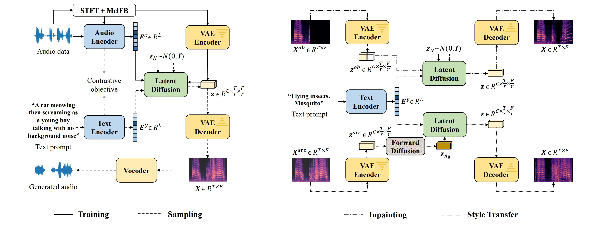
Figure 1: Overview of AudioLDM design for text-to-audio generation (left), and text-guided audio manipulation (right). During training, latent diffusion models (LDMs) are conditioned on audio embedding and trained in a continuous space learned by VAE. The sampling process uses text embedding as the condition. Given pretrained LDMs, the zero-shot audio inpainting and style transfer are realized in the reverse process. The block Forward Diffusion denotes the process that corrupt data with gaussian noise.
| One-minute overview for a quick-taste |
|---|
|
The following sections show more demos. |
TTA Generation with Human Text Prompt
Short Samples:
| A man is speaking under the water. | Two space shuttles are fighting in the space. | The sound of a steam engine. |
Long Samples:
| Cat gently meowing and purring in long intervels. | Peaceful and calming ambient music with singing bowl and other instruments. | Nature environmental noise with various bird vocalization, high fidelity, children playing far away and light wind. |
Acoustic Environment Control:
| A man is speaking in a huge room. | A man is speaking in a small room. | A man is speaking in a studio. |
Material Control:
| Chopping tomatos on a wooden table. | Chopping meat on a wooden table. | Chopping patatos on a metal table. |
Pitch Control:
| Sine wave with low pitch. | Sine wave with medium pitch. | Sine wave with high pitch. |
Temporal Order Control:
| A racing car is passing by and disappear. | A female is speaking followed by footstep sound. | Wooden table tapping sound followed by water pouring sound. |
Label-to-Audio Generation:
| A capella | Babbling | Burping, eructation |
| Eruption | Gasp | Fart |
Unconditional Generation:
| "Null" |
TTA Generation with ChatGPT Text Prompt
Short Samples:
| Human Question to ChatGPT | Simplified ChatGPT Answer | AudioLDM |
|---|---|---|
| Describe the sound of the battlefiled | Battlefield scene, continuous roar of artillery and gunfire, high fidelity, the sharp crack of bullets, the thundering explosions of bombs, and the screams of wounded soldiers. | |
| Describe what does a pop music sound | Pop music that upbeat, catchy, and easy to listen, high fidelity, with simple melodies, electronic instruments and polished production. | |
| Describe the sound of the ocean | The steady crashing of waves against the shore,high fidelity, the whooshing sound of water receding back into the ocean, the sound of seagulls and other coastal birds, and the distant sound of ships or boats. |
Long Samples:
| Human Question to ChatGPT | Simplified ChatGPT Answer | AudioLDM |
|---|---|---|
| Describe the sound of the outer space | Radio emissions from stars, planets, galaxies and other celestial bodies, high fidelity, as well as the sounds of solar winds and cosmic rays. | |
| Describe what does a dance music sound with at most 30 words | Dance music with strong, upbeat tempo, and repetitive rhythms, include sub-genres like house, techno, EDM, trance, and many more. | |
| Describe the sound of the factory | Loud and chaotic. Hum and buzz of machinery such as power tools, high fidelity. Clanking and clattering of metal parts, the whirring of motors and engines, and the beeping and alarms of various instruments. | |
| Describe what does a scary music sound with at most 30 words | Scary music with dissonant harmonies, irregular rhythms, and unconventional use of instruments. |
Text-Guided Audio Style Transfer
| From drum beats to ambient music. | From trumpet to children singing. | From sheep vocalization to narration, monologue. |
|---|---|---|

|
 |
 |
Text-Guided Audio Inpainting with Original Text Prompt
| Unprocessed | Inpainting result | Ground-Truth |
|---|---|---|
| 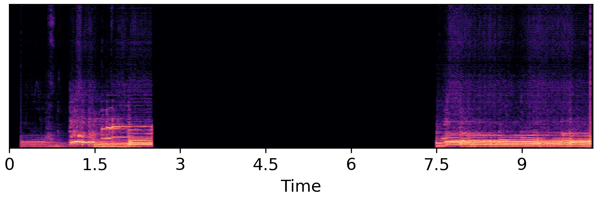 | 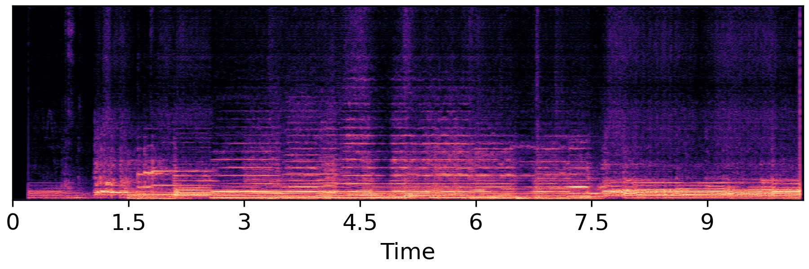 | 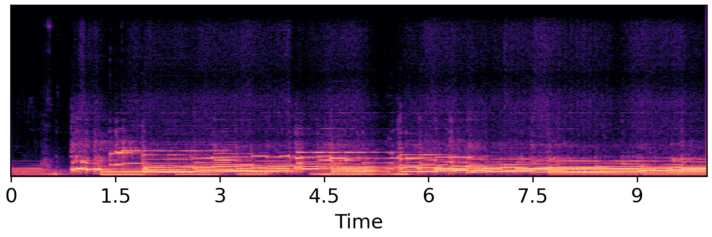 |
| 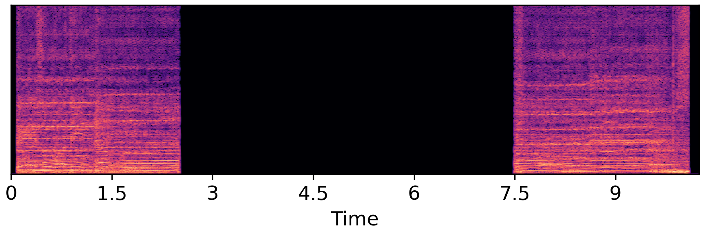 | 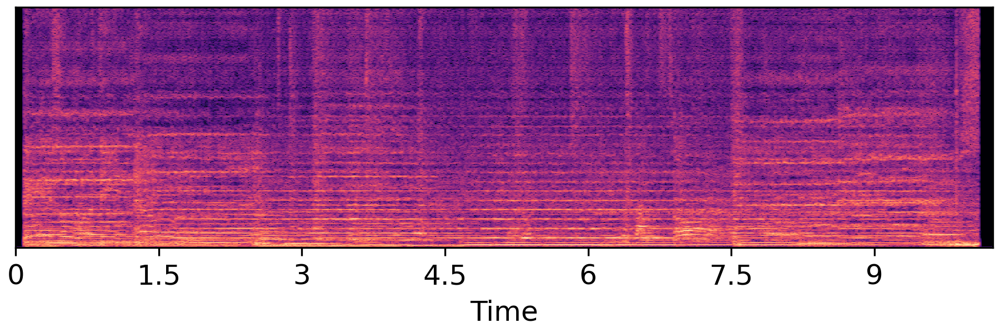 | 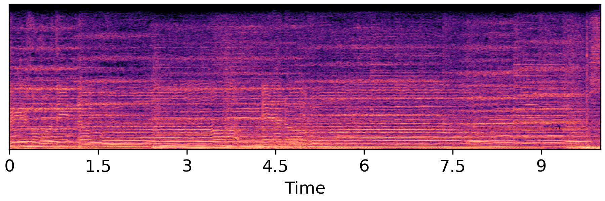 |
| 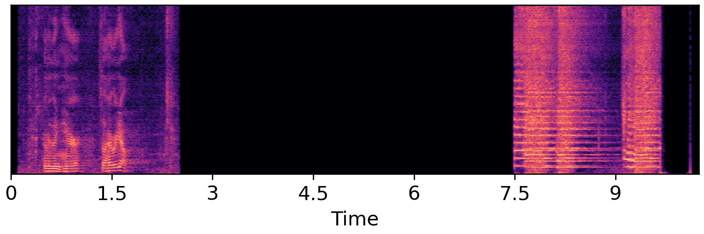 | 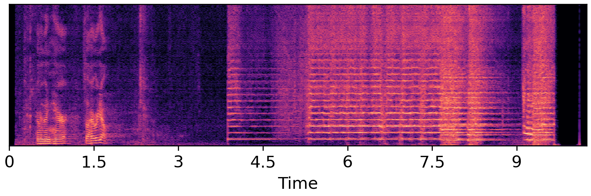 | 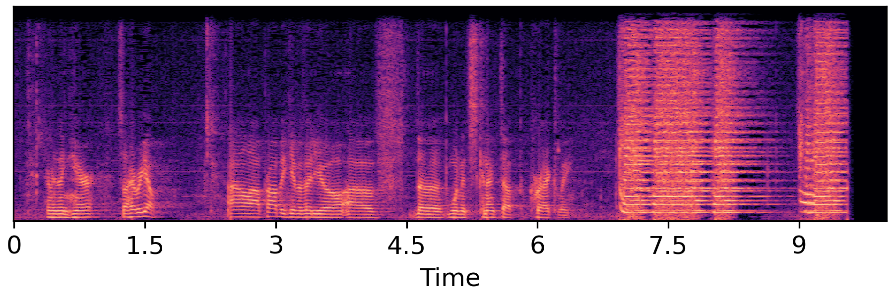 |
Text-Guided Audio Inpainting with Diverse Text Prompt
| Unprocessed | Ground-Truth | A cat is meowing. |
|---|---|---|
| 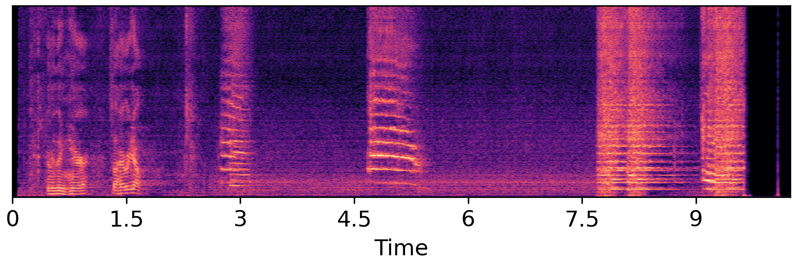 | ||
| Ambient music | A man is speaking with bird calls in the background | Raining with wind blowing. |
| 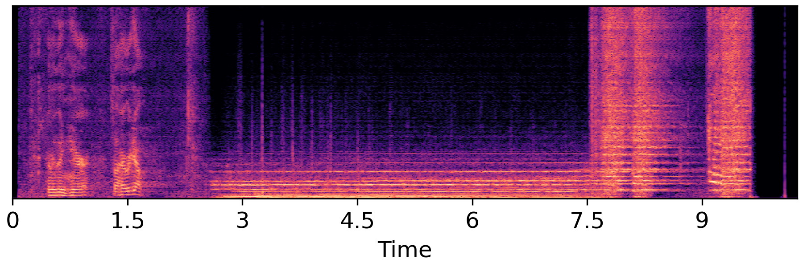 |  |
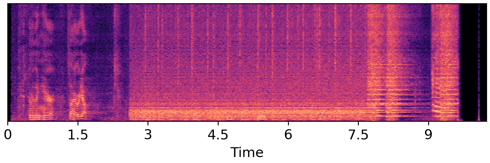 |
Text-Guided Audio Super-Resolution
| Violin | Baby Crying | Female Speech |
|---|---|---|
 |
 |
 |
| 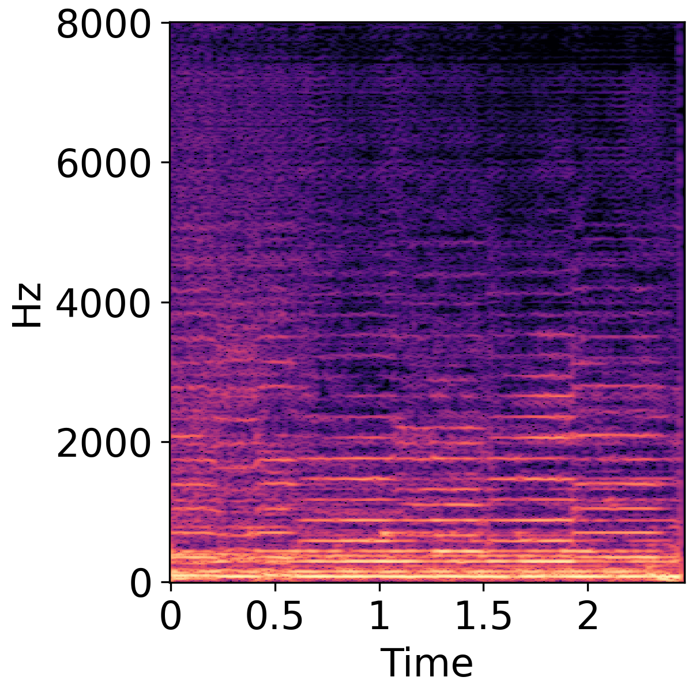 | 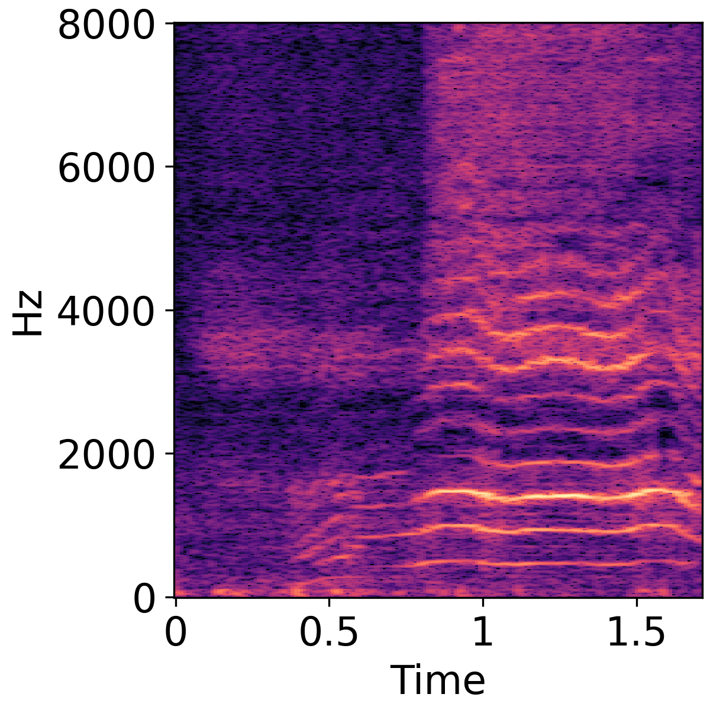 | 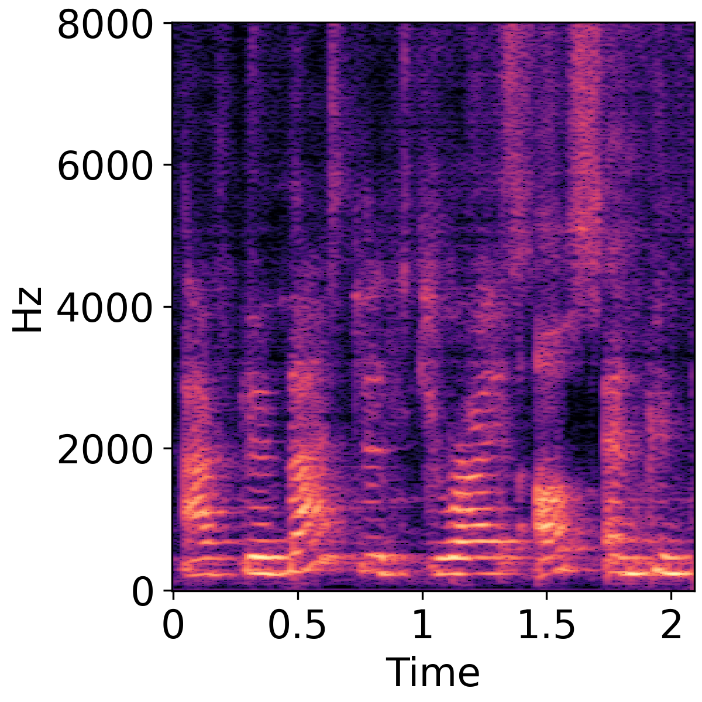 |
| 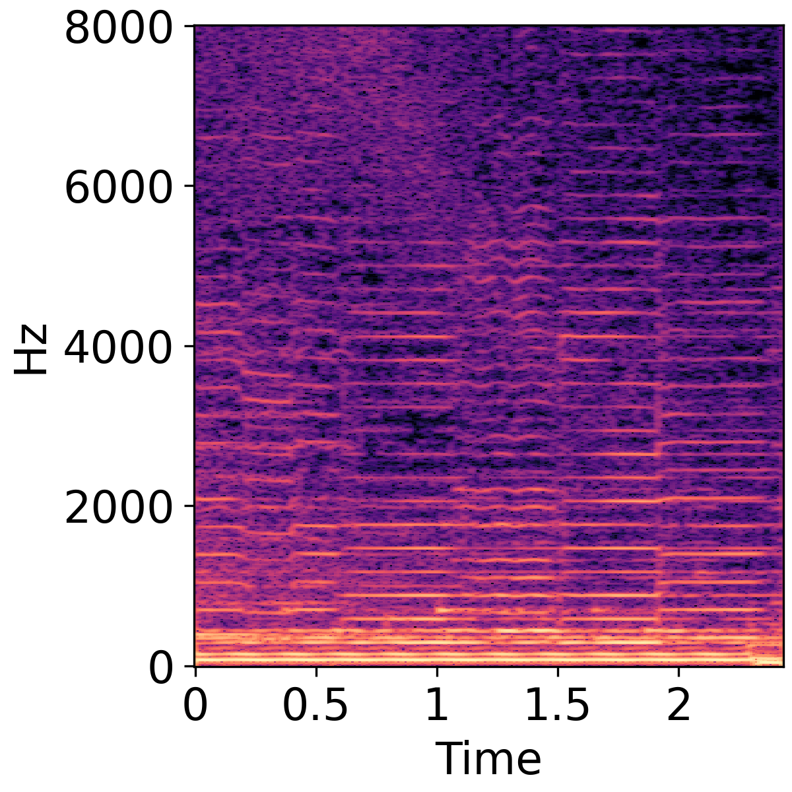 | 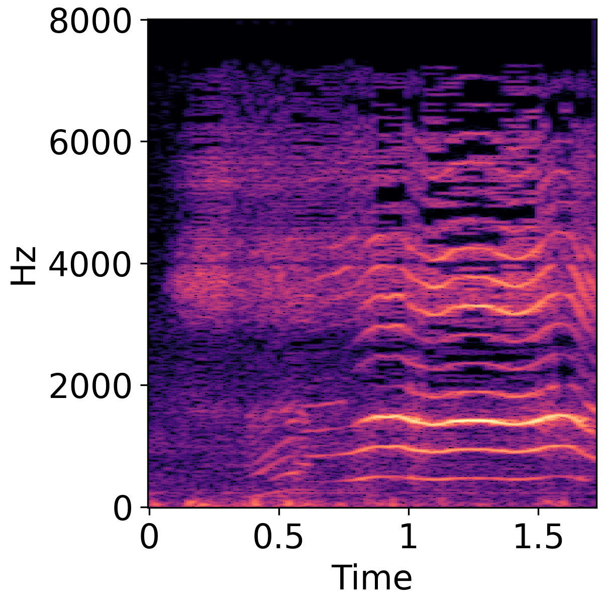 | 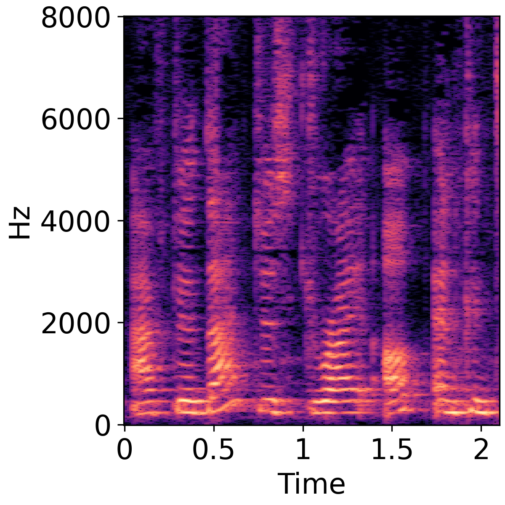 |
| Label to sound generation | Generate music with: "A music is made by []". |
|---|---|
Other comments
1. We share our code for model evaluation on github, which aims to unify audio generation model evaluation for easier comparison.
2. We are confirming the data-related copyright issue, after which the pretrained models will be released.